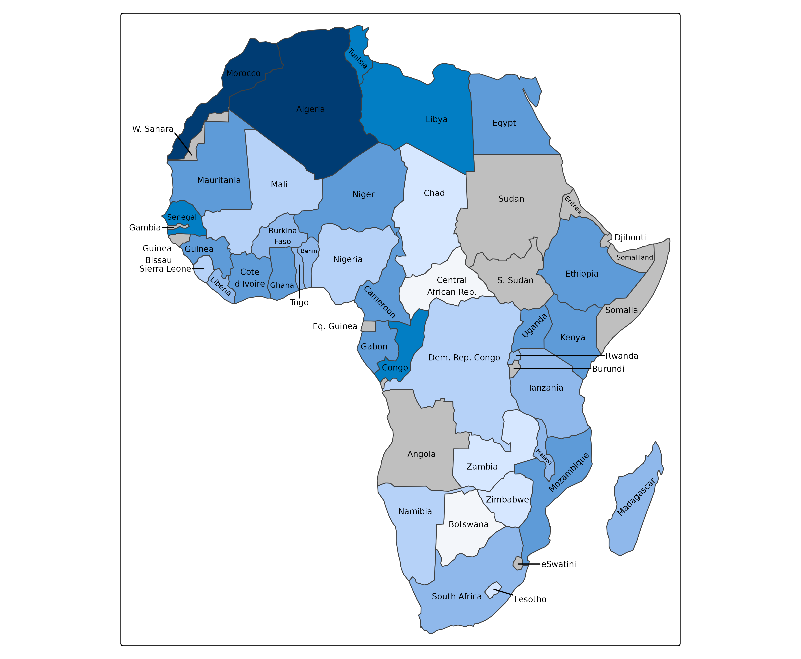
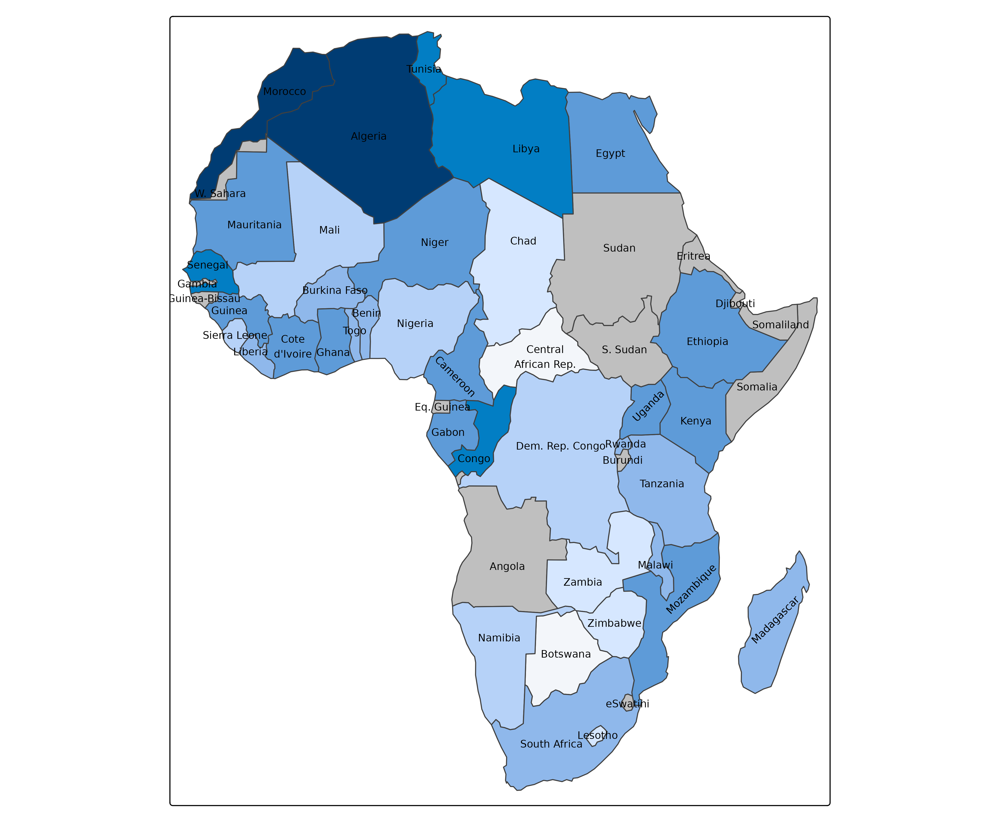
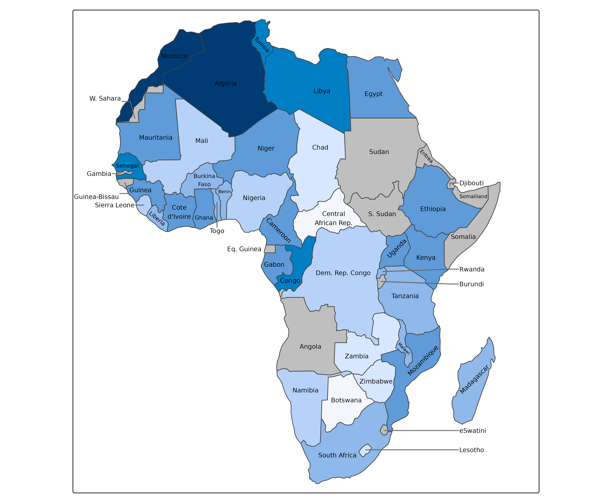
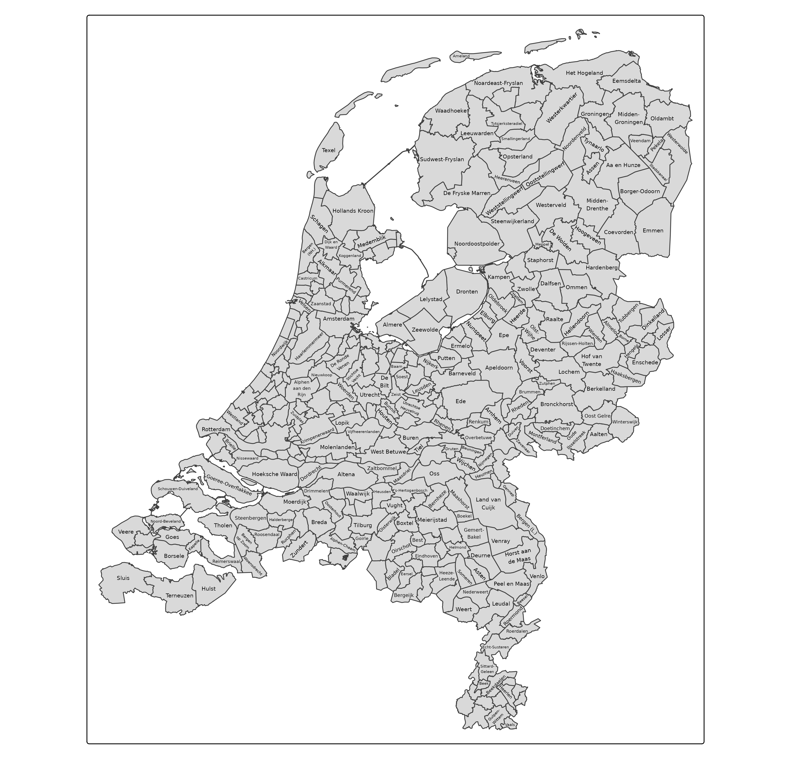
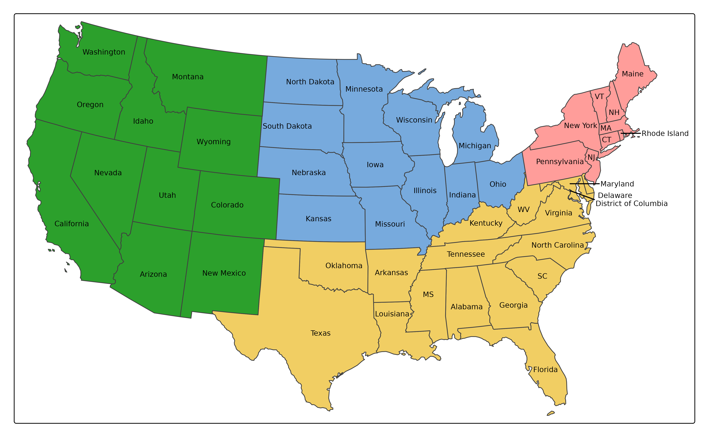
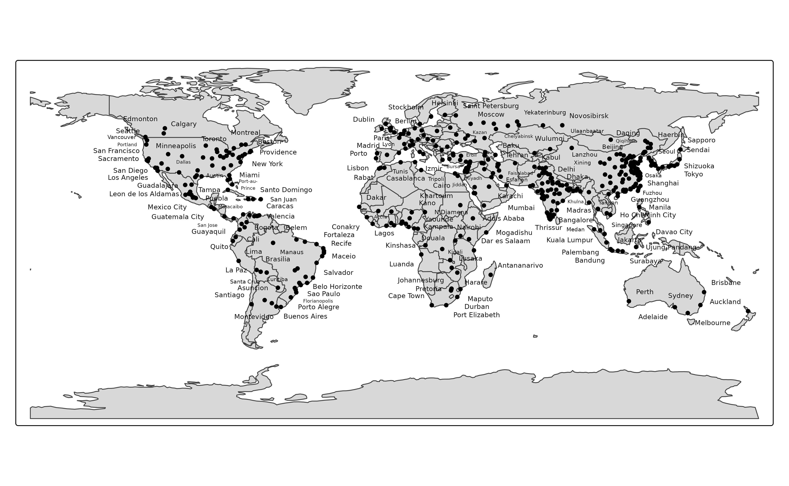

Text versus labels
tmap has two layer functions for text:
-
tm_text()draws text as data: the text is drawn exactly at the location of the feature, and its size, color, and font face can be map variables with a scale and a legend. -
tm_labels()names features. Labels are placed where they are readable: inside polygons, next to points, and outside the map features if needed. Labels that do not fit are dropped.
This article is about tm_labels(). Its behavior is
configured with tm_placement(), passed on to the
placement argument of opt_tm_labels().
Polygon labels
A polygon label is placed at the center of the largest circle that fits inside the polygon (also known as the pole of inaccessibility). For long and thin polygons this spot is much better than the centroid, which may even lie outside the polygon.
Africa = World[World$continent == "Africa", ]
tm_shape(Africa, crs = "+proj=robin") +
tm_polygons("HPI", fill.legend = tm_legend_hide()) +
tm_labels("name", size = 0.6) +
tm_layout(inner.margins = c(0.02, 0.08, 0.02, 0.02))
When a label does not fit inside its polygon, the steps of a fallback chain are tried, in this order:
-
"wrap": the text is broken into two or three lines (“Burkina Faso”, “Cote d’Ivoire”); -
"rotate": the text is rotated along the main axis of the polygon, at most 45 degrees (Madagascar, Mozambique); -
"shrink": the font size is decreased, down to 70% (Benin, Malawi); -
"move": the label is moved outside, into free space, with a leader line (Gambia, Guinea-Bissau, Rwanda, Lesotho); -
"drop": the label is dropped.
The steps are cumulative: a rotated label is also tried with wrapped text, and a shrunk label also with wrapped and rotated text.
Changing the fallback chain
The chain is the fallback argument of
tm_placement(). Steps can be removed or reordered. The last
step is either "drop" or "overlap", which
keeps the labels that do not fit at their natural spot. In the following
map, labels are never shrunk or moved, and labels that do not fit are
kept:
tm_shape(Africa, crs = "+proj=robin") +
tm_polygons("HPI", fill.legend = tm_legend_hide()) +
tm_labels("name", size = 0.6,
options = opt_tm_labels(placement = tm_placement(fallback = c("wrap", "rotate", "overlap"))))
There are also a few presets:
| preset | meaning |
|---|---|
"auto" |
the default, tm_placement()
|
"inside" |
labels never leave their polygon: wrap, rotate, shrink, or drop |
"callout" |
labels that do not fit are moved to a column next to the map |
"none" |
labels are placed at the centroids, as with
tm_text()
|
Moving labels outside
The "move" step places a label in free space: not on top
of other polygons, labels, or the label spots of other features. The
leader line does not cross other leader lines or labels. With
move = "free" (the default), the nearest free spot is used,
at most 15 label heights away (or 25 if there is no free spot within 15
label heights). Labels that cannot be moved are tried again with their
text wrapped in two lines (“Guinea-Bissau”). With
move = "column" (as in the preset "callout"),
the labels are stacked in a column at the left or right side of the map,
whichever is nearest:
tm_shape(Africa, crs = "+proj=robin") +
tm_polygons("HPI", fill.legend = tm_legend_hide()) +
tm_labels("name", size = 0.6,
options = opt_tm_labels(placement = "callout",
leader = tm_leader(col = "gray40", type = "elbow"))) +
tm_layout(inner.margins = c(0.02, 0.1, 0.02, 0.1))
With col = "auto", the text color of a moved label
contrasts with the map background instead of the polygon fill. The
leader lines are specified with tm_leader(): the color (by
default the text color), line width, line type, the shape
("straight" or "elbow"), and the minimum
distance for which a leader line is drawn. Use
leader = FALSE to omit them.
Moved labels need free space within the map frame. When there is not
enough space, labels are dropped, and a message suggests to add space
with the inner.margins of tm_layout() (bottom,
left, top, right), as in the map above.
Maps with many small polygons
Moving labels outside works well when only a few labels do not fit.
On maps with many small polygons, such as the municipalities of the
Netherlands, the many leader lines would clutter the map. Therefore, no
labels are moved when more than 25% of the labels do not fit; the labels
are then placed as with the preset "inside". This threshold
is the argument move.max of tm_placement(). A
message tells when this happens:
[labels] 34% of the labels do not fit inside their polygons, which is too many to move outside (see `move.max` of `tm_placement()`)
tm_shape(NLD_muni) +
tm_polygons() +
tm_labels("name", size = 0.4)
Short texts and priority
tm_labels() has two data arguments for label
placement:
-
short: a data variable with short texts, e.g. abbreviations, used by the"abbreviate"step; -
priority: a data variable that determines the order in which labels are placed. Labels with a higher priority are placed first, so they get the best positions, and they are dropped last. By default, the priority is the area of the polygon, or the text size of a point label.
The US state map is a classic example: the names of the large states are written in full, the small states in the northeast get their abbreviation, and the ones for which even the abbreviation does not fit are moved outside.
us = spData::us_states
us$abbr = state.abb[match(us$NAME, state.name)]
us$abbr[us$NAME == "District of Columbia"] = "DC"
tm_shape(us, crs = 5070) +
tm_polygons("REGION", fill.legend = tm_legend_hide()) +
tm_labels("NAME", short = "abbr", size = 0.6,
options = opt_tm_labels(placement = tm_placement(
fallback = c("abbreviate", "wrap", "move", "drop")))) +
tm_layout(inner.margins = c(0.02, 0.02, 0.02, 0.06))
Point labels
A point label is placed at one of the eight positions around the
point, in the order of preference of Imhof: top right, top left, bottom
right, bottom left, right, left, top, and bottom. A position is used
when the label does not overlap other labels or points. If none of the
positions is free, the fallback chain is used (without
"rotate"). The distance between a point and its label is
the gap of tm_placement(), in line
heights.
Here, the largest metropolitan areas are labeled first:
tm_shape(World) +
tm_polygons() +
tm_shape(metro) +
tm_dots() +
tm_labels("name", priority = "pop2020", size = 0.5)
The placement of point labels of previous versions of tmap, an
optimization of the label positions with simulated annealing, is still
available with tm_placement(method = "SANN").
Interactive maps
In view mode (leaflet), polygon labels are placed at the center of
the largest inscribed circle, as in plot mode. After each zoom and pan,
labels that overlap with other labels are hidden, in the order of
priority. Zooming in creates space, so hidden labels will
reappear. In the modes "maplibre" and "mapbox"
of the extension package tmap.mapgl, the collision of
labels is handled by MapLibre and Mapbox, also in the order of
priority, and point labels are placed at the positions
around the point.
The steps wrap, rotate, shrink, and move are only applied in plot mode, since whether a label fits depends on the zoom level.
Overview
| argument | function | meaning |
|---|---|---|
fallback |
tm_placement() |
ordered steps for labels that do not fit: "abbreviate",
"wrap", "rotate", "shrink",
"move", and finally "drop" or
"overlap"
|
rotate.max |
tm_placement() |
maximum rotation (degrees) |
shrink.min |
tm_placement() |
smallest font scale factor |
move |
tm_placement() |
"free", "column", or a side |
move.max |
tm_placement() |
maximum fraction of labels that are moved |
gap |
tm_placement() |
distance between points and their labels |
method |
tm_placement() |
"greedy", "SANN", or "GA"
(point labels) |
col, lwd, lty,
type, min.length
|
tm_leader() |
leader lines |
short, priority
|
tm_labels() |
short texts and priority (data variables) |